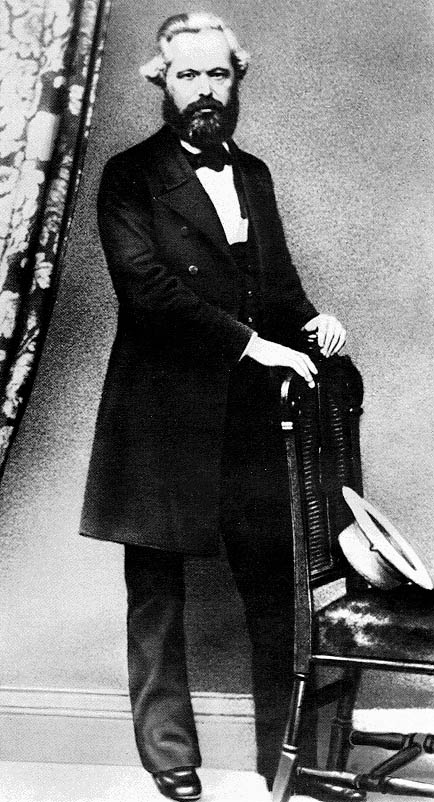

The Grundrisse
1. Utopias on the lines of Defoe's Robinson Crusoe.
2. Sir James Steuart (1712-80), 'the rational exponent of the Monetary and Mercantile System' (Marx), an adherent of the Stuart cause who went into exile in 1745 and pursued economic studies on the Continent. Author of An Inquiry into the Principles of Political Economy, London, 1767 (2 vols), Dublin, 1770 (3 vols—the edition used by Marx).
3. zoon politikon—political animal.
4. Fredric Bastiat (1801-50), French economist, and 'modern bagman of Free Trade' (Marx). A believer in laissez-faire and the natural harmony of interests between labour and capital; a fierce opponent of socialism in theory and in practice (as deputy in the Constituent and Legislative Assemblies of 1848 to 1851).
5. Henry Charles Carey (1793-1879), American economist, opponent of Ricardian pessimism ('Carey, who does not understand Ricardo'—Marx), believed in state intervention to establish harmony between the interests of labour and of capital, and in the tendency of real wages to rise.
6. Of a commonplace (mind). Marx refers here to Bastiat's Harmonies Economiques, Paris, 1851, pp. 16-19, and Carey's Principles of Political Economy, Pt I, Philadelphia, 1837, pp. 7-8.
7. John Stuart Mill (1806-73), English political theorist and economist; radical in politics, confusedly and eclectically Ricardian in economics. His Principles of Political Economy, London, 1848, begin in Bk I, Ch. 1, with the analysis of production.
9. MEW XIII substitutes 'in consumption'.
10. MEW XIII substitutes 'products'.
11. 'Determination is negation', i.e., given the undifferentiated self-identity of the universal world substance, to attempt to introduce particular determinations is to negate this self-identity. (Spinoza, Letters, No. 50, to J. Jelles, 2 June 1674).
12. In English in the original.
13. 'Potentially'. Cf. Aristotle, Metaphysics Bk VIII, Ch. 6, 2.
14. The manuscript has: 'for the product is production not only as...'. MEW XIII substitutes: 'for the product is a product not as...'.
15. The manuscript has 'for production'.
16. Jean-Baptiste Say (1767-1832), 'the inane Say', who 'superficially condensed political economy into a textbook' (Marx), a businessman who popularized and vulgarized the doctrines of Adam Smith in his Traité d'économie politique, Paris, 1803.
17. Heinrich Friedrich Storch (1766-1835), Professor of Political Economy in the Russian Academy of Sciences at St Petersburg. Say issued Storch's work Cours d'économie politique with critical notes in 1823; he attacked Say's interpretation of his views in Considérations sur la nature du revenu national, Paris, 1824, pp. 144—59.
18. David Ricardo, On the Principles of Political Economy and Taxation, 3rd edn, London, 1821, preface, p.v.
19. Marx considered that the Monetary System, as defined here, covered economists from the sixteenth century to the Physiocrats. However, within the Monetary System there arose what he calls here the 'commercial, or manufacture system' but elsewhere the Mercantile System (known to economics textbooks as Mercantilism). He distinguishes between the two systems on pp. 327-8, but his normal practice is to link them together, since ' the Mercantile System is merely a variant of the Monetary System' (A Contribution to the Critique of Political Economy, London, 1971, p. 158).
21. Pierre Joseph Proudhon, Système des contradictions économiques ou philosophie de la misère, Paris, 1846, Vol. I, p. 146.